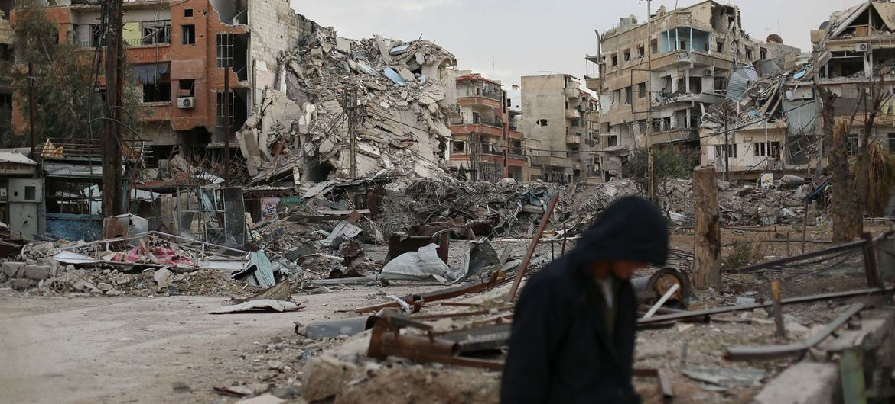

Síria

A Síria está localizada no Oriente Médio e possui grande importância estratégica por fazer fronteira com vários países da região.

Um dos conflitos mais complexos do século XXI
A Guerra da Síria começou em 2011 e se tornou um dos conflitos mais graves do mundo contemporâneo, envolvendo disputas internas e interesses internacionais.
A Síria está localizada no Oriente Médio e possui grande importância estratégica por fazer fronteira com vários países da região.
A Primavera Árabe foi uma série de protestos iniciados em 2010 no Norte da África e Oriente Médio, exigindo democracia e melhores condições de vida.
Repressão política e corrupção.
Falta de direitos humanos e liberdade.
Desemprego e pobreza generalizada.
Na Síria, uma seca severa entre 2007 e 2010 agravou a crise social e econômica, aumentando o descontentamento da população.
Os protestos contra o regime autoritário foram reprimidos violentamente, marcando o início da Guerra Civil Síria.
Forças oficiais do regime sírio.
Grupos opositores ao governo.
Forças que controlam regiões do norte.
Organizações como o HTS.
A guerra envolveu potências como EUA, Rússia, Irã e Turquia, cada uma com interesses estratégicos na região.
Milhões de refugiados e deslocados.
Destruição de cidades e infraestrutura.
Crise e instabilidade prolongada.
Em 2024, o regime de Bashar al-Assad entrou em colapso após avanços de grupos rebeldes que tomaram cidades estratégicas e chegaram a Damasco.
Isso marcou o fim de décadas de governo da família Assad na Síria.

A Síria atualmente enfrenta desafios de reconstrução, estabilidade política e retorno de refugiados.